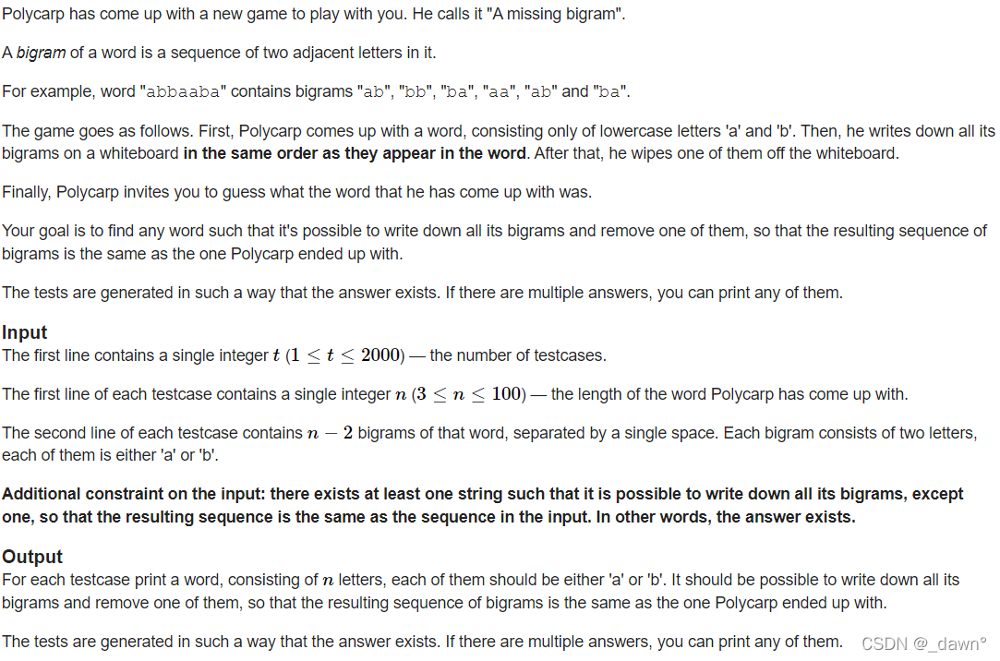

wls yyds！参考
目录
[A. Polycarp and Sums of Subsequences](#A. Polycarp and Sums of Subsequences)
[B. Missing Bigram](#B. Missing Bigram)
[C. Paint the Array](#C. Paint the Array)
[D. Array and Operations](#D. Array and Operations)
[E. Singers’ Tour](#E. Singers’ Tour)
[ F. Reverse](# F. Reverse)
A. Polycarp and Sums of Subsequences
主要意思是给出含有三个的数组，通过相加得到一共七个元素组成新的数组，按大小排序后，求原来的三个元素。
思路： 从最后算起，最大的一定为三个数的和，另外次大的两个分别为两数相加，相减可得。
AC代码：
1 2 3 4 5 6 7 8 9 10 11 12 13 14 15 16 17 18 19 20 21 22 23 24 25 26 27 28 29 30 31 32 33 34 35 36 37 38 39 40 41 42 #include <iostream> #include <cstdio> #include <algorithm> #include <stack> #include <vector> #include <map> #include <queue> #include <cstring> #include <cmath> #include <set> #include <iterator> #include <numeric> using namespace std;typedef long long ll;#define ios ios::sync_with_stdio(false);cin.tie(0);cout.tie(0); #define INF 0x3f3f3f3f const int mod=1e9 +7 ;int t;ll a[8 ],b[4 ]; int main () cin>>t; while (t--) { memset (a,0 ,sizeof (a)); memset (b,0 ,sizeof (b)); for (int i=1 ;i<=7 ;i++) cin>>a[i]; b[1 ]=a[7 ]-a[6 ]; b[2 ]=a[7 ]-a[5 ]; b[3 ]=a[7 ]-b[1 ]-b[2 ]; cout<<b[1 ]<<' ' <<b[2 ]<<' ' <<b[3 ]<<'\n' ; } return 0 ; }
B. Missing Bigram

主要意思是给出一个仅含有a，b的字符串的若干二元组，求原来的字符串。
思路： 把给出的字符串从左到右相连，若前一个的第二个字母与后一个的第一个字母相等，则将后一个第二个字母连上；若不等则直接把后一个字符串连上；最后判断字符串长度是否与n相等，若不等则任意在字符串左右加上a或b。
AC代码：
1 2 3 4 5 6 7 8 9 10 11 12 13 14 15 16 17 18 19 20 21 22 23 24 25 26 27 28 29 30 31 32 33 34 35 36 37 38 39 #include <bits/stdc++.h> using namespace std;typedef long long ll;#define ios ios::sync_with_stdio(false);cin.tie(0);cout.tie(0); #define INF 0x3f3f3f3f const int mod=1e9 +7 ;int t,n;string s,q; int main () cin>>t; while (t--) { cin>>n; cin>>q; for (int i=1 ;i<n-2 ;i++) { cin>>s; if (q[q.size ()-1 ]==s[0 ]) q+=s[1 ]; else q+=s; } if (q.size ()!=n) { for (int i=1 ;i<=n-q.size ();i++) q+="a" ; } cout<<q<<'\n' ; } return 0 ; }
废话可跳过：一个简单的模拟题，做的时候不知道字符串输入怎么处理。。。我觉得这说明我模拟题就没练好www
C. Paint the Array
主要意思是对于数组，可否找到一个数d，使得满足仅偶数位可整除而奇数位不能整除，或者仅满足奇数位可整除而偶数位不能整除。
思路： 基本思路是求公约数，需要分别求偶数位和奇数位的公约数，但是满足题意的公约数是：奇数位的公约数不能被偶数位任一元素整除，相反奇数位相同。
AC代码：
1 2 3 4 5 6 7 8 9 10 11 12 13 14 15 16 17 18 19 20 21 22 23 24 25 26 27 28 29 30 31 32 33 34 35 36 37 38 39 40 41 #include <bits/stdc++.h> using namespace std;typedef long long ll;#define ios ios::sync_with_stdio(false);cin.tie(0);cout.tie(0); #define INF 0x3f3f3f3f const int mod=1e9 +7 ;const int N=108 ;int t,n;ll a[N]; int main () cin>>t; while (t--) { cin>>n; ll x=0 ,y=0 ; for (int i=1 ;i<=n;i++) cin>>a[i]; for (int i=1 ;i<=n;i++) { if (i&1 ) x=__gcd(x,a[i]); else y=__gcd(y,a[i]); } bool flag1=0 ,flag2=0 ; for (int i=1 ;i<=n;i++) { if (!(i&1 )&&a[i]%x==0 ) flag1=1 ; if ((i&1 )&&a[i]%y==0 ) flag2=1 ; } if (!flag1) cout<<x<<'\n' ; else if (!flag2) cout<<y<<'\n' ; else cout<<"0" <<'\n' ; } return 0 ; }
废话可跳过：想清楚某些条件之间的关系，不要把问题想复杂！
D. Array and Operations
主要意思是说对数组进行k次操作，每次操作都取出数组中两个数相除，加入score中，剩余的数直接加入score中，求全部操作完成后的最小score值。
思路： 这个题有一个greedy的标签，阅读题意后应该知道，我们将对最大的k2个数进行相除操作，剩余的n-2 k个数直接加入score中；对该2*k个数进行操作时，一小一大相除结果为0，若两数相等，则score值+1，则最后的score为前面较小的数之和加需操作数的贡献。
AC代码：（注意对需操作的2*k个数的处理方式！）
1 2 3 4 5 6 7 8 9 10 11 12 13 14 15 16 17 18 19 20 21 22 23 24 25 26 27 28 29 30 31 32 33 34 35 36 37 38 39 40 41 42 43 44 45 46 47 #include <bits/stdc++.h> using namespace std;typedef long long ll;#define ios ios::sync_with_stdio(false);cin.tie(0);cout.tie(0); #define INF 0x3f3f3f3f const int mod=1e9 +7 ;const int N=108 ;int t,n,k;int a[N],b[N];bool cmp (int a,int b) return a>b; } int main () cin>>t; while (t--) { cin>>n>>k; memset (a,0 ,sizeof (a)); for (int i=0 ;i<n;i++) cin>>a[i]; sort (a,a+n,cmp); int cnt=0 ; for (int i=0 ;i<2 *k;i++) b[++cnt]=a[i]; int ans=0 ,tot=0 ; for (int i=2 *k;i<n;i++) ans+=a[i]; for (int i=1 ;i<=cnt;i++) { if (b[i]==b[cnt/2 +1 ]) tot++; } if (tot>=cnt/2 ) ans+=tot-cnt/2 ; cout<<ans<<'\n' ; } return 0 ; }
E. Singers’ Tour
主要意思是说有n个城市按顺序成环状分布，每个城市都有一个歌唱家，他们在这n个城市依次开演唱会，在自己所在的城市演唱会时长为a[i]，接下来每一个城市时长都会增加一个a[i]长度，题目给出所有歌唱家在每座城市开演唱会的全部时长，求每个歌唱家一开始的a[i]是多少。
**思路：**自己手动算一下：按照环状的形状模拟，b[1]=a[1]+2a[n]+3 a[n-1]+…+na[2]； b[2]=a[2]+2 a[1]+3a[n]+…+n a[3]；我们可以仅写出b[1]与b[2]来找规律，用b[2]-b[1]，得到结果为a[1]+a[2]+a[3]+…+a[n]-na[2]；即b[2]-b[1]= a[2]；多写几个b[i]的式子我们可以知道，=n*(n+1)/2*，而b数组的和是我们的已知条件，可以根据两个b[i]相减的式子来推每一个a[i]的值了。
AC代码：（注意不满足情况 的判断！！！）
1 2 3 4 5 6 7 8 9 10 11 12 13 14 15 16 17 18 19 20 21 22 23 24 25 26 27 28 29 30 31 32 33 34 35 36 37 38 39 40 41 42 43 44 45 46 47 48 49 50 51 52 53 54 55 56 57 58 59 60 #include <bits/stdc++.h> using namespace std;typedef long long ll;#define ios ios::sync_with_stdio(false);cin.tie(0);cout.tie(0); #define INF 0x3f3f3f3f const int mod=1e9 +7 ;const int N=4e4 +8 ;int t,n,a[N];ll b[N]; int main () cin>>t; while (t--) { cin>>n; memset (a,0 ,sizeof (a)); memset (b,0 ,sizeof (b)); ll sum=0 ; for (int i=1 ;i<=n;i++) cin>>b[i],sum+=b[i]; if (n==1 ) { cout<<"YES" <<'\n' ; cout<<b[1 ]<<'\n' ; } else { if (sum%((n+1 )*n/2 )) cout<<"NO" <<'\n' ; else { int tot=0 ; bool flag=true ; ll ans=sum/((n+1 )*n/2 ); if ((ans-(b[1 ]-b[n]))%n) flag=false ; a[++tot]=(ans-(b[1 ]-b[n]))/n; if (a[tot]<=0 ) flag=false ; for (int i=1 ;i<n;i++) { if ((ans-(b[i+1 ]-b[i]))%n) flag=false ; a[++tot]=(ans-(b[i+1 ]-b[i]))/n; if (a[tot]<=0 ) flag=false ; } if (!flag) cout<<"NO" <<'\n' ; else { cout<<"YES" <<'\n' ; for (int i=1 ;i<=tot;i++) cout<<a[i]<<" \n" [i==tot]; } } } } return 0 ; }
F. Reverse
主要意思是说给出x，y两数，判断x是否可以通过题目所述的若干次操作后得到y。
思路： 找到x，y两数二进制取反形式，使用记忆化搜索即可。（注意细节！）
AC代码：
1 2 3 4 5 6 7 8 9 10 11 12 13 14 15 16 17 18 19 20 21 22 23 24 25 26 27 28 29 30 31 32 33 34 35 36 37 38 39 40 41 42 43 44 45 #include <bits/stdc++.h> using namespace std;typedef long long ll;#define ios ios::sync_with_stdio(false);cin.tie(0);cout.tie(0); #define INF 0x3f3f3f3f const int mod=1e9 +7 ;ll x,y; string a,b; set<string>ss; void dfs (string s) for (;s.back ()=='0' ;) s.pop_back (); if (s.size ()>70 ||ss.count (s)) return ; ss.insert (s); reverse (s.begin (),s.end ()); dfs (s); dfs (s+'1' ); } int main () cin>>x>>y; while (x) { a.push_back ('0' +x%2 ); x/=2 ; } while (y) { b.push_back ('0' +y%2 ); y/=2 ; } dfs (a); cout<<(ss.count (b)?"YES" :"NO" )<<'\n' ; return 0 ; }
细节解释：1、dfs中dfs(s),dfs(s+‘1’)是因为取反后加入后缀为0的不变，而对于操作对后缀+1的则需要另讨论；2、dfs为什么时间复杂度可以过，是因为按位数计算，long long最多60位二进制，深度优先搜索不会爆时间复杂度；3、for(;s.back()==‘0’;) s.pop_back();作用为去掉后缀0，使得取反后字符串加1不受后缀0影响。
废话可跳过：开始补题以来参考了许多网友的代码，发现他们对库函数的运用特别灵活而我都不知道几个库函数，，，用库函数真的很方便欸
若有错误请赐教
Orz
If you like this blog or find it useful for you, you are welcome to comment on it. You are also welcome to share this blog, so that more people can participate in it. If the images used in the blog infringe your copyright, please contact the author to delete them. Thank you !

![\sum_{i=1}^{n}a[i]](6.png) -na[2]；多写几个b[i]的式子我们可以知道，=n*(n+1)/2*，而b数组的和是我们的已知条件，可以根据两个b[i]相减的式子来推每一个a[i]的值了。
-na[2]；多写几个b[i]的式子我们可以知道，=n*(n+1)/2*，而b数组的和是我们的已知条件，可以根据两个b[i]相减的式子来推每一个a[i]的值了。